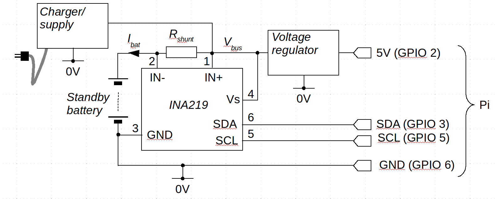

Monitoring an INA219 chip in a Raspberry Pi battery-backed power supply
 The Raspberry Pi, and similar systems,
have a greater range of applications if they can be run on battery power.
This is easily
accomplished by powering the Pi's USB power input from one of the many
"USB power bank" products on the market. This approach is inexpensive
and simple to implement, but not very flexible. Most of these "power banks"
are very limited in the way they can be powered, but a bigger
problem is that they don't provide any way for the Pi to monitor the
battery health.
The Raspberry Pi, and similar systems,
have a greater range of applications if they can be run on battery power.
This is easily
accomplished by powering the Pi's USB power input from one of the many
"USB power bank" products on the market. This approach is inexpensive
and simple to implement, but not very flexible. Most of these "power banks"
are very limited in the way they can be powered, but a bigger
problem is that they don't provide any way for the Pi to monitor the
battery health.
There are many battery supply products for the Raspberry Pi and similar small systems. They can be powered by a wall adapter, or a car battery, on sometimes by solar cells. Many of these systems include the Texas Instruments INA219 current/voltage monitor chip, which allows the Pi (or whatever) to monitor the battery status using an I2C interface.
These products typically come with some poor-quality software examples, usually in Python, and with no meaningful documentation. The INA219 is not self-evident in operation, and integrating it with custom software can be fiddly.
In this article I describe how to monitor battery status using the INA219 using simple, fully-documented C code. In order for the code to make sense, I will explain in outline how the INA219 is used in a typical battery power supply. I won't be describing the electronics in detail, but writing the software without some idea of the hardware configuration is impossible.
I'll be showing snippets of C code, but not a full application. The full application is available in my GitHub repository.
What is the INA219?
The Texas Instruments INA219 is a current/voltage monitor with an I2C interface. It's actually an analogue-to-digital converter with two inputs, called "IN+" and "IN-". The INA219 measures the voltage on IN- with respect to ground, and the voltage difference between IN+ and IN-. Both these voltage values are made available on the I2C interface.
By connecting a small "shunt" resistance between IN+ and IN-, in the path of current flow to the load, the INA219 can measure both the load voltage and current, as we shall see.
The INA219 is found in a huge range of power monitoring and power supply applications. Most of the battery-power add-ons for the Raspberry Pi (and similar) use this device.
The INA219 has a reputation for being rather fiddly to program. The good thing about using one with a Raspberry Pi is that there's really no need to program it at all. The INA219's default, non-programmed mode of operation is perfectly satisfactory for most applications. Programming is required if you want the INA219 to do power and current calculations itself but, unless you're planning on sampling thousands of times a second, there's no problem with doing these simple calculations in software.
To understand fully the operation of the INA219, the datasheet is very helpful.
A simple circuit
The diagram below shows how the INA219 is typically used in backup power supply devices for the Raspberry Pi. It's only an outline -- I'm not explaining how the battery charger and voltage regulator work, because these components aren't really relevant to using the INA219.

In this circuit, when the Pi is running on external power, current to charge the battery flows through the shunt resistance Rshunt from the power source to the battery. The IN- terminal measures what the INA219 datasheet refers to as the "bus voltage" and is, in this circuit, the battery voltage. The bus voltage can be up to 32V.
Using Ohm's law we can work out the battery current Ibat as Vbus / Rshunt.
When the Pi is running on battery power, current flows through the shunt resistance to the voltage regulator. Whether IN+ has a higher voltage than IN- depends on the direction of flow of the battery current, so the INA219 provides a signed measure of this voltage, which the datasheet calls the shunt voltage. In short, the sign of the shunt voltage indicates whether the battery is charging or discharging.
In the circuit shown above, a positive shunt voltage indicates that the battery is charging -- because IN+ will be at a slightly higher voltage than IN-.
The choice of shunt resistance is important. The value needs to be small so that power is not wasted in heating this resistance. However, if it is too small, the voltage developed across it might be too small to measure accurately. The INA219 has a precision of 10 microvolts in measurement of the shunt voltage. However, there is a certain amount of noise on this voltage, and we shouldn't rely on being able to measure sub-millivolt voltages accurately. In low(-ish) current applications, the shunt resistance is often in the order of 0.1 ohms, making the shunt voltage in the region of hundreds of millivolts. The maximum shunt voltage the INA219 can measure is +/- 320 mV.
One important feature of the INA219 that I didn't show in the circuit diagram is the address setting mechanism. Pins 7 and 8 of the IC control the I2C address, in the range 0x40-0x4F. The address pins can be connected in various ways to provide this range of 16 addresses -- full details are in the datasheet.
A few words about batteries
Most low-voltage backup power supplies now use NiMH batteries, which are both inexpensive and compact. Compared to traditional lead-acid batteries they're fiddly and relatively slow to charge safely, but their high capacity-to-size ratio makes them almost ubiquitous in low-voltage applications.
As with most battery technologies, there's no obvious way to measure the level of charge in the battery directly. All we can do is measure the voltage, and try to infer the charge level. This is relatively easy to do with NiMH batteries because the charge-voltage characteristic is quite linear over most of the working voltage range.
Consider the popular 18650 battery. Its nominal voltage is 3.7 V, but fully charged and under light load it typically measures about 4.1 V. As it discharges at a constant current, the voltage drops steadily to about 3V, and then rapidly thereafter. In practice, we can assume that the voltage range of such a battery is 3 - 4.1 V, with 4.1 V representing 100% charge, and 3 V representing no charge.
If an 18650 battery has a charge capacity of 2400 milliamp-hours (mA.hr), we can broadly assume that if a fully-charged battery supplies (say) 1 amp to its load, it will continue to supply power for about 2.4 hours. Over that time period, the battery voltage will drop from about 4.1 V to about 3 V. So we can -- in principle -- estimate the amount of run-time left on battery power, by measuring the battery voltage and the load current. However, what constitutes "zero charge" depends to some extent on what is being powered. If there is some minimum voltage which the battery has to maintain, in order to power the equipment, then we should take that as the "zero charge voltage", for the purposes of reporting charge level.
In practice, the battery voltages that represent full charge and no charge may have to be determined experimentally: the figures quoted by manufacturers are usually only nominal.
Interfacing the INA219
The INA219 acts as an I2C slave device, and can be set up using Linux I2C devices in the usual way.
#include <linux/i2c.h>
#include <linux/i2c-dev.h>
int i2c_addr = 0x42;
int fd = open ("/dev/i2c-1", O_RDWR);
if (fd >= 0)
{
// Set the I2C slave address
if (ioctl (fd, I2C_SLAVE, i2c_addr) >= 0)
{
// It's OK -- carry on
}
else
// Error
}
else
// Error
Once set up, the interaction is by ordinary write() and
read() calls on the file descriptor.
The INA219 has six internals registers, of which my simple example application only uses two. These are the shunt voltage register (register 1), and the bus voltage register (register 2). The other registers either program the device, or provide readings of current and power, based on programmed calibration data. Since we'll be doing these calculations in software, none of these additional registers are used.
Without programming, the INA219 reads the bus (battery) voltage with 4 mV precision, in the range 0-32V, and the shunt voltage with 10 uV precision in the range +/- 320 mV. Different ranges can be programmed but this does not improve accuracy or precision. The only difference caused by programming is in the way the data bits are organized in the INA219's registers. This is potentially of importance when interfacing with an unintelligent controller, but otherwise of no great interest, since we can jiggle the bits around in software.
Reading a register in the INA219 follows a similar protocol to many
other I2C devices -- write the register number to the I2C device, then
read the data. In this case, the register number is an eight-bit value
(of which only a small number of values is used), and the data read
is a 16-bit value. So reading a register amounts to writing one byte
to the I2C device, and then reading two bytes.
If we use a parameter whose type is
int16_t, a function to read a specific register can be
implemented as follows.
// Open the device and set the bus address, as described above
int fd = ...
ioctl (fd, ...)
BYTE buff[2];
buff[0] = reg;
uint16_t data;
// Write the register number to the bus
if (write (fd, &buff, 1))
{
// Then read the two-byte result
if (read (fd, buff, 2) == 2)
{
data = (buff[0] << 8 ) | buff[1];
}
else
// Error
}
else
// Error
It's important to understand that the value read from the INA219's registers is neither signed nor unsigned (necessarily) -- it's a collection of bits, whose individual meanings are described in the datasheet. As it happens, with the shunt voltage measured with the default 320mV range, the value in the register is, in fact, a simple signed value, giving the voltage in 10 uV units. So to get the shunt voltage in mV, we just read the register (as a signed value), and divide the number by 100 (because multiplying by 100 is the same as multiplying by 10, then dividing by 1000).
The bus voltage register is a bit more complicated. Its layout is described on page 23 of the datasheet. For our purposes, all we need to know is that the bus voltage is packed into the highest 13 bits of the register, and is unsigned. The bottom three bits in the bus voltage register have entirely different purposes. The 13-bit value is the bus voltage in units of 4mV.
So, to get the bus voltage we need to read the bus voltage regulator, shift its contents right three places (without treating the highest bit as a sign), then multiply by four. My sample code uses an uglier, but faster, way to achieve the same end:
uint16_t regval = (uint16_t) //.. read register contents int bus_voltage_mv = (regval & 0xFFF8 ) >> 1;
The voltage value in the bus register is effectively left-shifted three bits (because it occupies bits 3-15). This shift means that it's effectively multiplied by 8 to start. We want this value multiplied by 4 (mV), so we shift it right one place.
Calculating the battery state
Once we have the bus voltage and shunt voltage, by reading the registers and fiddling the bits as required, all the interfacing to the INA219 is done. Everything else is a matter of simple arithmetic.
First, we work out the current percentage charge by seeing where the battery voltage lies between the minimum and maximum battery voltage. If the battery voltage is half-way between the minimum and maximum, we take it to be 50% charged.
Then we work out the battery current from the shunt voltage using Ohm's law, bearing in mind that the sign of the shunt voltage indicates whether the battery is charging or discharging.
When we know the percentage charge, and the battery current, it's a matter of arithmetic to work out how long it is until the battery is fully charged or fully discharged.
These calculations are in the function ina219_get_status()
in the sample application.
Closing remarks
It's actually much easier to use the INA219 in a C program than the datasheet would suggest -- so long as you don't have to program it. When used with a general-purpose computing device, there's actually no advantage to programming it, because its default mode of operation is appropriate.